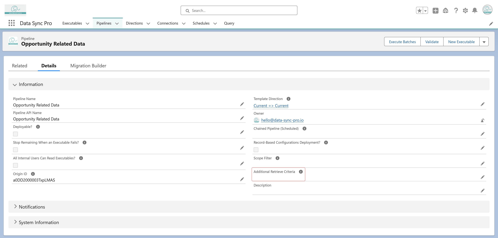

The "Additional Retrieve Criteria" field on a Pipeline allows you to define
a shared SOQL filter that applies to all Executables within the Pipeline.
This ensures that each Executable retrieves data that meets the common
criteria while still respecting its own individual filters.
Key Benefits:
-
Standardizes data retrieval across multiple Executables in a Pipeline.
-
Minimizes redundancy by avoiding repeated filter definitions in each
Executable.
-
Enhances flexibility, as Executables can still apply additional filters
specific to their processing needs.
Editing Consideration:
-
When editing the Retrieve query for an Executable within a Pipeline that
has "Additional Retrieve Criteria", it is best to temporarily remove the
shared criteria, make the necessary updates, and then reapply the
"Additional Retrieve Criteria" once the edits are complete. This prevents
unintended query conflicts and ensures smooth execution.
